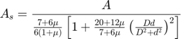
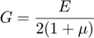
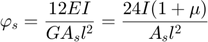

shaftElement
generate the mass, stiffness, gyroscopic matrix of a shaft element
Contents
Syntax
[Me, Ke, Ge] = shaftElement(AShaft)
Description
AShaft is a struct saving the physical parameters of a shaft element with fields: dofOfEachNodes, outerRadius, innerRadius, density, elasticModulus, poissonRatio, length.
Me, Ke, Ge are mass, stiffness, gyroscopic matrix of a shaft element. (n*n, n is the number of all nodes on this shaft element)
Symbols
A: sectional area
As: effective shear area

l: length of the shaft element
mu: poisson's ratio
E: elastic modulus
G: shear modulus

d: inner radius
D: outter radius
phis: a constant

I: